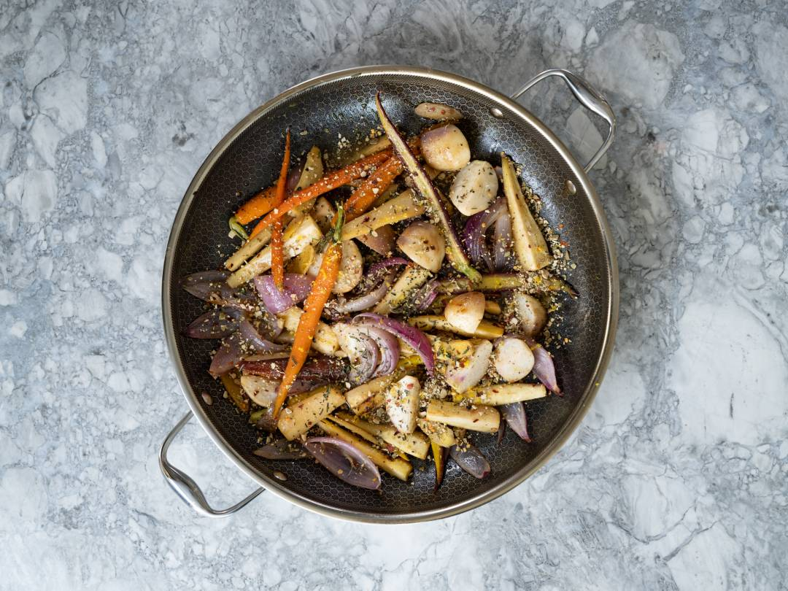

ROASTED ROOT VEGETABLES WITH CRUSHED PEPITAS

INGREDIENTS
- 3 parsnips, stems trimmed
- 8 rainbow carrots, cleaned and halved
- 1 red onion, peeled and sliced into 1-inch wedges
- 1 cup of baby turnips, halved
- 2-inch knob of fresh ginger, peeled and sliced
- Flaky sea salt and fresh cracked pepper, to taste
- 6 tablespoons unsalted butter, divided
- 1/2 cup chicken stock
- 1 lemon, for zesting
- 2 tbsp woody herbs, e.g. rosemary or thyme, chopped
COOKING INSTRUCTIONS
- Preheat oven to 425˚F.
- Prepare parsnips, slice thin tips from the parsnips to prevent from burning and discard. Slice parsnips in quarters, slicing first in half and then again in half lengthwise to create 2-inch pieces.
- Heat a 14-inch skillet over high heat and drizzle with oil, once hot, sear vegetables in batches, starting with carrots followed by red onions, turnips, and parsnips. Season generously with salt, pepper, and drizzle with more olive oil to coat, continue cooking until carmelized.
- Add sliced ginger and stir in half the butter, once melted, drizzle in chicken stock to just cover the bottom of the pan. Bring to a boil before roasting in the oven until tender.
- To finish - toss vegetables with fresh chopped woody herbs and remaining butter. Enjoy warm.
Recipe Notes:
- Vegetables can be cooked on the stovetop, depending on your available space. toss frequently and keep a close eye on liquid in the pan, adding more or less as needed until vegetables are carmelized and tender.
- Add a crunchy garnish - Crush toasted pepitas in a mortar and pestle until they resemble a coarse texture. Add a pinch of salt and chili flakes and crush a touch more - top roasted vegetables to garnish.